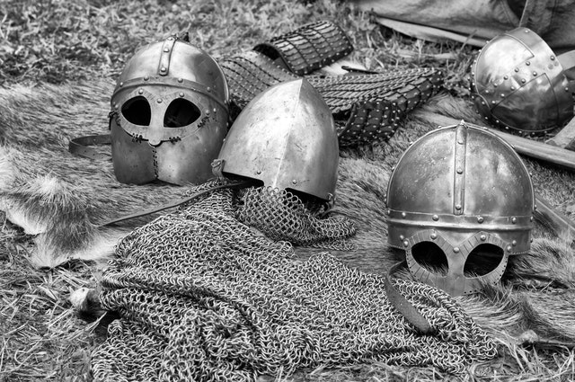

A blacksmith is a metalsmith who creates objects from wrought iron or steel by forging the metal, using tools to hammer, bend, and cut (cf. tinsmith). Blacksmiths produce objects such as gates, grilles, railings, light fixtures, furniture, sculpture, tools, agricultural implements, decorative and religious items, cooking utensils and weapons. There was an historical opposition between the heavy work of the blacksmith and the more delicate operation of a whitesmith, who usually worked in gold, silver, pewter, or the finishing steps of fine steel. The place where a blacksmith works is called variously a smithy, a forge or a blacksmith's shop. While there are many people who work with metal such as farriers, wheelwrights, and armorers, in former times the blacksmith had a general knowledge of how to make and repair many things, from the most complex of weapons and armor to simple things like nails or lengths of chain.
